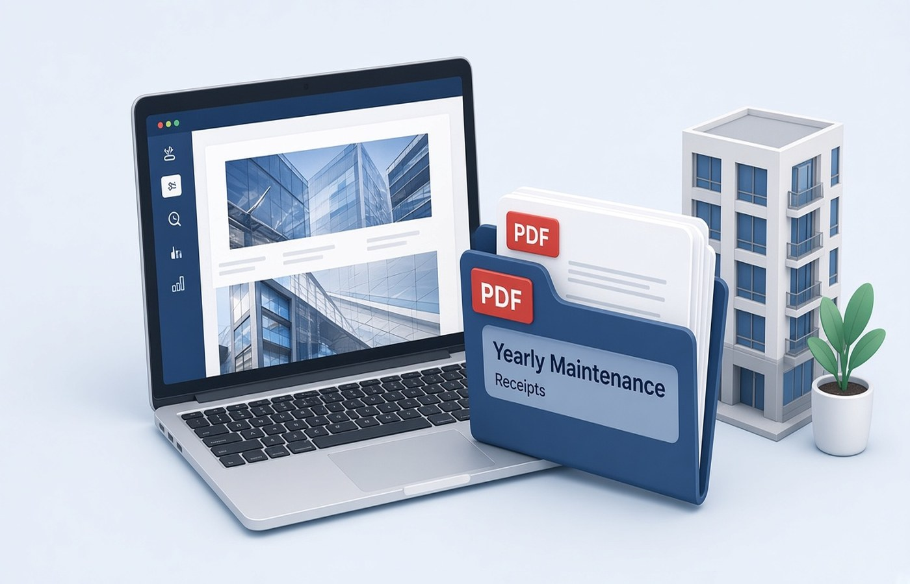

Apartment maintenance receipts show up as a WhatsApp image, a thin paper slip, or a portal PDF with a new name every month. At resale or during a home loan top-up, the buyer or the bank asks for a year of paid maintenance, and the chat has already compressed half the slips. Keep a folder on Windows for the financial year, one PDF per month, with the receipt number readable. These are receipts the society issued. Do not type a new amount over a faded slip. If a month is missing, ask the society office for a duplicate.
A year folder beats a chat thread
Create a folder with the society name and the year, and put April through March inside it, or the society's own billing cycle if it differs. Each month should be one PDF. If you only have a photo, turn that photo into a one-page PDF on the PC the same week you pay. Waiting until March means the original image has been forwarded and recompressed. Name the file with the year, the month, and the receipt number, such as 2026-04-Maint-Receipt-1182.pdf. You can see a missing month by looking at the list.
Do not merge the year into one PDF as your only copy. A buyer may want that bundle later, and you can make it then. The monthly files are how you replace a single bad page. If the society portal lets you download a statement for the whole year, keep that statement and the monthly receipts. They serve different checks. The statement is a summary. The receipt is the payment proof.
- One folder per society per year
- One PDF per month, named with the month
- Receipt number visible in the file and on the page
- Chat images converted the week you pay
Make the slip readable once
Society slips are small. Photograph the whole slip, including the stamp and the month, on a plain background. Crop the table out, rotate the page upright, and export the PDF. Read the flat number and the amount at normal zoom. If the stamp hides the month, take a second photo rather than guessing. A receipt that could be March or May is not proof. If the treasurer sends a PDF from a billing app, store that file and skip the photo.
Some months include a separate sinking-fund or repair line on a second slip. Keep that second slip as its own PDF with the fund name in the title, unless your society issues one combined receipt. Do not crop a line off to make the total look like pure maintenance. The page should match what you paid. Compress only if you are mailing a bundle and the size is over the limit, then recheck the receipt number.
What a buyer or a bank asks to see
They usually want a continuous set, not twelve loose photos. When asked, merge a copy of the monthly PDFs in date order and send that copy, leaving the monthly files in the folder. Put the flat number in the merged file name. If a month was waived, include the society's letter for that waiver instead of a blank page. A blank page looks like a missing payment. A letter explains it.
Check that every page shows the same flat. A neighbour's receipt forwarded by mistake is an awkward error in a sale file. Split it out. If any PDF from the portal is password protected, open it with the code the society shared with residents. If you do not have the code, ask the office. Do not remove a password you were not given. After it opens, confirm the flat number before you archive the file.
Share a copy, not your only file
Mail or upload a copy. Keep the folder on your PC through the sale and after it, until you are sure no one will ask again. Society offices change vendors and old portals disappear. Pdf Buddy can turn the slip photo into a PDF, merge a year copy, and compress it on Windows. The receipts do not need a random website in the middle. Send them to the bank, the buyer, or the society, which are the parties who asked.
If you are the person who pays for a parent, label the folder with the flat and the owner name so a sibling does not start a second, conflicting set. You are storing receipts that were issued. A missing month is a request to the society, not a homemade slip. Do not recreate a receipt on letterhead you designed. Ask the office for a duplicate with their stamp and the same receipt number.
Questions people actually ask
Is one merged PDF for the year enough? Keep one PDF per month as the archive, and merge a copy when a buyer or a bank wants a single file. If the merged file is your only copy, one bad page is harder to replace. The monthly files also show a gap as soon as a month is missing.
The WhatsApp slip is faded. Can I write the amount in the margin? Ask the society for a duplicate or download the portal receipt. The amount on the page should be theirs. A handwritten figure on a faded photo is easy to challenge in a sale. Store the clearer official copy. Keep that PDF in the month slot.
We have two flats in the same society. How should the folders work? Use one folder per flat per year, even if you pay both from the same account. Names should include the flat number. A shared folder is how a receipt for A-102 gets sent with the loan file for B-204. Split them the day you pay.
Save each maintenance receipt on the PC in a year folder, one month per file. Pdf Buddy, by Easy Peeze Tools, is a Windows desktop PDF editor that works on the PC. Slips are not uploaded to a random website. The free tier is 2 files a day. Pricing starts at ₹149. See download.